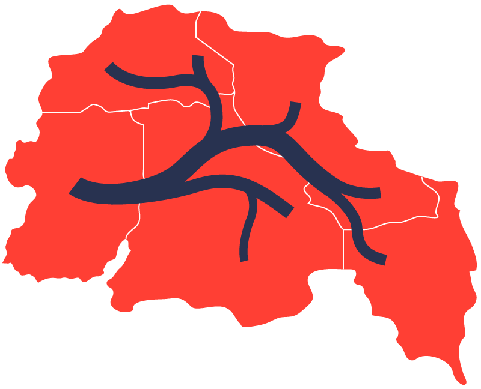
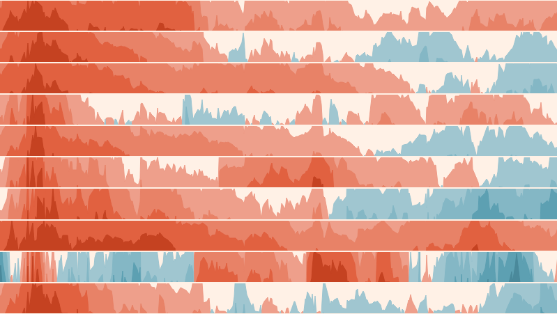

PEC2 Estudio de técnicas de visualización de datos
Índice
- Pyramid chart. (Emisiones de carbono)
- Flow map. (Flujo de Inversiones)
- Horizon chart. (Intensidad de emisiones de carbono)
Pyramid chart
- Forma piramidal.
- Décadas 70-80.
- Proporciones de datos categóricos.
- Mínimo dos categorías.
- Máximo alrededor de 5 categorías,
dependiendo de la legible.
- Suman 100%.
- (+) Jerarquía evidente.
- (+-) Comparación sencilla, no evidente.
- (-) Precisión limitada.
- Marketing, ventas, educación...
Pirámide de Emisiones
Distribución de las emisiones de carbono de las inversiones de cada portfolio.
Scope 1: Emisiones directas provenientes de fuentes propias o controladas por la empresa.
Scope 2: Emisiones indirectas derivadas de la generación de energía comprada.
Scope 3: Todas las demás emisiones indirectas en la cadena de valor.
Flow Map
- Representa movimientos entre regiones.
- Siglo XIX, aunque pudo ser usada desde
la creación de los primeros mapas.
- Datos geográficos con volumenes de flujo.
- (+) Visualización clara.
- (+) Información cuantitativa.
- (+) Contexto geográfico.
- (-) Saturación visual.
- (-) Superposición líneas.
- Migración poblacional, Comercio y logística,
Flujo de información, Análisis ambiental...

Flujo de Inversiones
Distribución de inversiones de cada portfolio países, mostrando los volúmenes de inversión.
El mapa destaca los principales flujos y patrones geográficos de las inversiones.
Horizon Chart
- Comparación simultanea de series temporales.
- Introducido años 2000.
- (+) Compacto y eficiente.
- (+) Comparación simultánea.
- (+) Destaca variaciones.
- (-) Interpretación compleja.
- (-) Curva aprendizaje.
- Finanzas, Meteorología, Monitoreo de rendimiento…

Progreso Intensidad de Emisiones de Carbono
Cambios porcentuales en la intensidad de emisiones de carbono a lo largo del tiempo para distintos portafolios y sus respectivos benchmarks.
Intensidad de emisiones de carbono: Cantidad de gases de efecto invernadero emitidos por cada unidad de capital invertido, reflejando el impacto ambiental agregado de las inversiones realizadas.